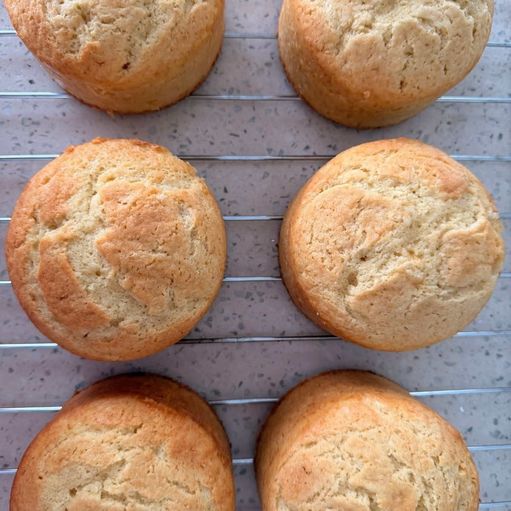

Home
Soft Butter Cake

Soft Butter Cakes 4 in size.
Soft Butter Cake is a soft, moist cake with a delicate buttery flavor.
Its tender yet sturdy crumb makes it an ideal base for decorated cakes,
pairing beautifully with a wide variety of fillings and frostings.
Ingredients
For 6 cake, 4 in each.
- 372 gr Cake Flour
- 266 gr Sugar
- 266 gr Butter Unsalted
- 180 gr Egg
- 156 gr Whole Milk
- 14 gr Baking Powder
- 5 gr Salt
- 20 gr Vanilla Extract
Steps
- Cream the butter and sugar for 5 minutes at medium speed using the paddle attachment.
- In a separate bowl, gently mix the eggs without incorporating air, just enough to break up and blend the whites and yolks. Add them to the creamed mixture in 6 to 8 batches.
- Add the dry ingredients (flour, baking powder, and salt) and the liquids (milk and vanilla), alternating between the dry and liquid ingredients (starting and ending with the dry). Mix only until incorporated on low speed.
- Remove the bowl from the mixer and fold the mixture 5 or 6 times from bottom to top using a rubber spatula to ensure everything is fully incorporated.
- Fill the molds, previously lined with parchment paper, only halfway. The mixture doubles in height during baking.
- Bake for 30 to 35 minutes in an oven at 338°F.